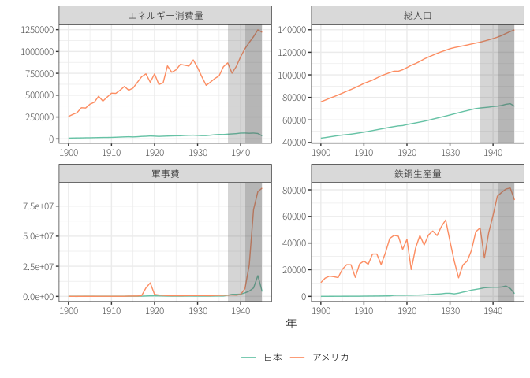
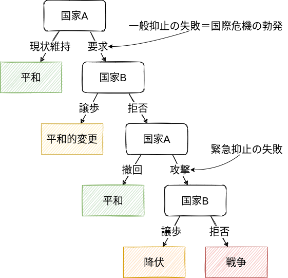
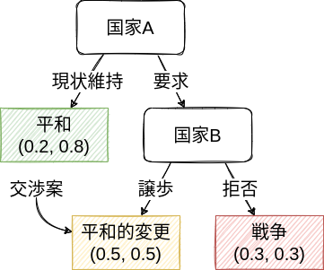
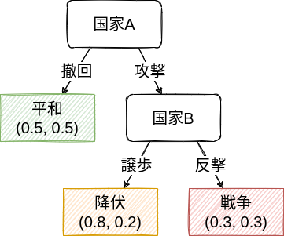
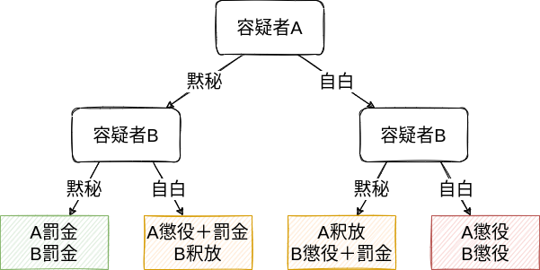
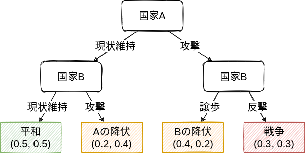
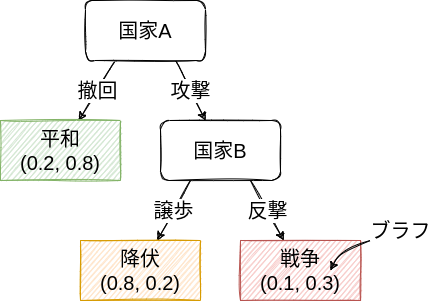
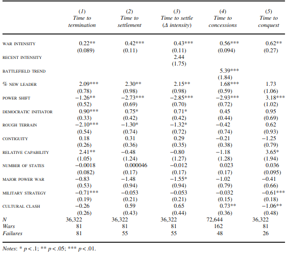

戦争と外交
国際公共政策学
はじめに
なぜ戦争は（社会的に望ましくないのに）起こるのか？
- ⼈間は本能的に争うから。戦争を好きな⼈間が政治的指導者になるから。
- 確かに、（少なくとも一部の）人間は好戦的な性格を持ち、戦争を行うこと自体が目的である場合もある。
- 戦争が起こった場合＝当事者の政治家や⺠族が戦争好きだった（循環論法）
- 安全保障政策\(\leadsto\)好戦的な人間を排除、性格を変える（生産的？）
- アナーキーな国際社会では戦争をしても罰せられないから。戦争を防ぐアクターがいないから。
- 確かに、警察や司法のように違法行為を取り締まって、処罰する存在はいない。
- 犯罪も全て抑止されていない。主権国家内でも内戦は起こる。
- 安全保障政策\(\leadsto\)アナーキーな国際社会を変えて、世界規模の中央集権的政治体制を構築する（現実的？）
いずれにせよ、人間の本性や国際社会の構造だけでは、特定の時代や地域で戦争や暴力が多いことを説明できない。
\(\leadsto\)なぜ戦争が、どのような状況で選択されるのか？
- 戦争は自然災害のようにある日、突然起こるものではない。
課題文献
- 強制外交と安心供与
- 中西, 石田, と 田所 (2013, 第3章)
- 戦争の交渉モデル
- 多湖 (2020, 第2章)
- 砂原, 稗田, と 多湖 (2020, 第10章)
- 坂本 と 石橋 (2020, 第2章)
- 大芝 ほか (2018, 第4章)
- 浅古 (2018, 第11章)
- 岡田 (2020, 第6章)
- 石黒 (2019, 第1章)
1 戦争の構造
あらゆる戦争は、様々な面で異なっている。
- 当事国の政策決定者（政治家）、歴史、政治経済状況、国際環境
しかし、異なる点を強調しすぎるとある戦争に関する情報は他の戦争について役に立たない。
\(\leadsto\)様々な戦争に共通する構造、要因に着目
1.1 政治の手段としての戦争
カール・フォン・クラウゼヴィッツ（「戦争論」）の戦争の定義(Clausewitz 2020)
戦争とは他の⼿段をもってする政治の継続である。
戦争とは、敵を強制してわれわれの意志を遂⾏させるために⽤いられる暴⼒⾏為である。
戦争：政治的目的を実現する手段、政治（外交）の延長線上
- 戦争それ自体が目的ではない（そうあるべきではない）。
- 戦争以外の手段でも政治的目的は達成しうる。
\(\leadsto\)「なぜ戦争が起こるのか」＝「なぜ外交が失敗したのか」(Fearon 1995)
1.2 政治が登場するとき
「政治とはなにか」は難しい問い\(\leadsto\)どのようなときに政治が登場するかを考える。
1.2.1 複数のアクター
一人で意思決定できる場合は政治は登場しない。
- 例、一人で夕飯になにを食べるか
\(\leadsto\)複数の人の間で意思決定を行う時に政治が登場する。
アクター (actor)：自律的に（他者から影響を受けつつも）意思決定を行う存在
- 国際社会では主権国家が主たるアクター
- 国家を動かす政治家、官僚、企業、市民
- 国境を越えて活動する国際機関、NGO、テロリスト
1.2.2 利害の対立
全てのアクターが同じ目的、利害関心を持っている場合も政治は登場しない。
- 例、GWに授業をするか
\(\leadsto\)利害が対立する時に政治が登場する。
利益 (interest)：アクターが追求するもの
- 経済的利益、自己利益に限定されない。
国益 (national interest)：国家が追求する利益
- 最も基本的な国益は安全保障 (security)
- 生存 (survival) を維持できていれば十分〜自国の独立への脅威が小さい
- 安全保障を達成するための権力 (power) や国力 (national capability)1
- 相手に意に反する行動を取らせることができる能力という関係性に基づく見方
- 軍事力や経済力など権力行使の資源に着目する見方
- いずれにせよ、国力とは関係のある他の国の国力との比較において決まると考えられる。
- 経済的な富 (wealth)
- 住民の生活水準や福祉 (well-being) の向上\(\leadsto\)しばしば為政者の権力維持
- 経済力や技術力を用いて軍事力に投資\(\leadsto\)国力の向上
- 軍事力のために経済的富を放棄しなければいけないというトレードオフ
- 領土 (territory)
- 軍事力や経済力の源泉
- 有限かつ交換不可能である点で特殊
- 産業革命以前：領土の広さ＝生産力や市場の規模＝国力資\(\leadsto\)領土紛争2
- 産業革命やフランス革命以降：領土を巡る争いに2つの相反する効果
- 領土の経済的価値は低下＆ナショナリズムの興隆により統治費用が拡大\(\leadsto\)領土を拡大する利益の減少
- ナショナリズム\(\leadsto\)領土を巡る譲歩の費用も拡大\(\leadsto\)妥協しにくい
- 観念的 (ideational) 要素
- イデオロギーや政治体制、価値観、宗教、評判や名誉
- 実際には、そこから生まれる権力や富？
1 国力と安全保障は密接に関係しているが、必ずしも等しいものではない。
2 この時期は経済力の伸長のために領土の拡大を行い、統治のために過剰な軍事力が必要になった結果、帝国が没落していったという見方もある(Kennedy 1993)。
現代の武力紛争は領土や政策（政府や政治体制を含む）を巡るものが多い。


1.3 戦争と外交
政治は複数の利害が対立するアクター（国家）の間で展開される。
利害の対立\(\neq\)戦争\(\leadsto\)戦争ではなく外交によって利害対立を解決する。
外交では、国家同士で価値のあるもの、財 (goods) をどのように分割するかについて決定する。
- 例、争っている領土をどのように分割するか、どのような政治体制・政策にするか
- 現状変更勢力 (revisionist power)／現状維持勢力 (status quo power)
最も単純な交渉は、一方が財を要求するかどうかを決定し、他方が譲歩するかどうかを決定するものである。
- まずはシンプルに2つの国（アクター）が領土を巡って争っている（利害対立）状況を考える。
2 抑止
2.1 一般抑止と緊急抑止
抑止 (deterrence) ：実行したいこと（つまり戦争）を自制させること
- 一般抑止：対立関係にはあるが武力行使や威嚇が顕在化することを防ぐ。3
- 緊急抑止：現状変更が求められた国際危機において、武力による威嚇で武力行使を防ぐ。
3 同盟国への攻撃の抑止を拡大抑止と呼ぶが、それに対して自国への攻撃の抑止を一般（通常）抑止と呼ぶこともある。

（強要 (compellence) ：実行したくないことを実行させること）
強制外交 (coersion diplomacy)：武力や威嚇による抑止や強要
\(\leadsto\)どのような場合に緊急抑止が成功するのか？
2.2 シナリオ1：緊急抑止の破綻・戦争の回避
次のような架空の状況を考えてみる。
国際危機のシナリオ1
- 国家AとBはとある領土の所有権を巡って争っている。
- 国家Aはその領土の20%を、国家Bは80%を占領している。
- 国家Aはさらにその領土の60%（つまり、全体で80%）の割譲をBに求めている。
- 仮に戦争が起こった場合、勝利した国が領土を全て占領できる。
- 国家Aは50%の確率で戦争に勝つ見込みである（したがって、国家Bも同様である）。
- しかし、戦争には費用がかかり、それを土地の価値に揃えるとAとBにとって40%分の価値であるとする。
仮に戦争が起こった場合、国家AとBは
\[ \textrm{勝利したときの領土} \times \textrm{勝利する確率} - \textrm{戦争の費用} = 1 \times 0.5 - 0.4 = 0.1 \]
の利益を得る。
\(\leadsto\)緊急抑止は失敗するが、戦争が起こらない。
2.3 シナリオ2：緊急抑止の成功
国際危機のシナリオ2
- 国家AとBはとある領土の所有権を巡って争っている。
- 国家Aはその領土の20%を、国家Bは80%を占領している。
- 国家Aはさらにその領土の60%（つまり、全体で80%）の割譲をBに求めている。
- 仮に戦争が起こった場合、勝利した国が領土を全て占領できる。
- 国家Aは50%の確率で戦争に勝つ見込みである（したがって、国家Bも同様である）。
- しかし、戦争には費用がかかり、それを土地の価値に揃えるとAにとって40%分の、Bにとって20%分の価値であるとする。
仮に戦争が起こった場合、国家Bは
\[ \textrm{勝利したときの領土} \times \textrm{勝利する確率} - \textrm{戦争の費用} = 1 \times 0.5 - 0.2 = 0.3 \]
の利益を得る（国家Aはシナリオ1と変わらず）。
\(\leadsto\)緊急抑止が成功する。
2.4 シナリオ3：緊急抑止の失敗・戦争の勃発
国際危機のシナリオ3
- 国家AとBはとある領土の所有権を巡って争っている。
- 国家Aはその領土の20%を、国家Bは80%を占領している。
- 国家Aはさらにその領土の60%（つまり、全体で80%）の割譲をBに求めている。
- 仮に戦争が起こった場合、勝利した国が領土を全て占領できる。
- 国家Aは50%の確率で戦争に勝つ見込みである（したがって、国家Bも同様である）。
- しかし、戦争には費用がかかり、それを土地の価値に揃えるとAとBにとって20%分の価値であるとする。
仮に戦争が起こった場合、国家AとBは
\[ \textrm{勝利したときの領土} \times \textrm{勝利する確率} - \textrm{戦争の費用} = 1 \times 0.5 - 0.2 = 0.3 \]
の利益を得る。

\(\leadsto\)緊急抑止は失敗し、戦争が起こる。
2.5 抑止の成功
抑止を成功させる条件＝(1)国家Bは攻撃をされたら反撃をする＆(2)国家Aは攻撃をしない
なぜ、国家Bは反撃を選択したのか？
- 戦争から得られる利益＞降伏から得られる利益
\(\leadsto\)現状維持の意図が大きい。
\[ \begin{split} &\textrm{戦争の利益} \\ &= \textrm{勝利したときの財} \times \textrm{勝利確率} - \textrm{戦争費用} \\ &> \textrm{降伏の利益} \end{split} \]
現状維持勢力にとって
- 争いの対象となっている財の価値が高い
- 戦争で勝利する確率が高い
- 戦争の費用が小さい
ときに反撃しやすい。
なぜ、国家Aは撤回を選択したのか？
- 平和から得られる利益＞戦争から得られる利益
\(\leadsto\)現状変更の意図が小さい。
\[ \begin{split} &\textrm{戦争の利益} \\ &= \textrm{勝利したときの財} \times \textrm{勝利確率} - \textrm{戦争費用} \\ &< \textrm{平和の利益} \end{split} \]
国家Bは
- 拒否的抑止：相手国の勝利する確率を低下させる
- 懲罰的抑止：相手国の戦争費用を増加させる
によって国家Aを抑止することができる。
3 交渉
実際には武力行使の前に、どのように財を分け合うのかについて交渉はできるはず。
緊急抑止が失敗し、戦争に至るシナリオ3ににおいて、次のような状況を考える。
国際危機のシナリオ3’
- 国家Aが領土を半分ずつ国家Bと分け合う提案をする。

\(\leadsto\)国家AとBは平和的な変更に合意する。
- 国家A：戦争よりも分割のほうが望ましい。
- 国家B：現状よりも分割は望ましくないが、戦争よりは望ましい。
戦争に費用がかかる限り、互いに戦争よりも望ましい財の配分案は必ず存在する(Fearon 1995)。
\[ \begin{split} &\textrm{Aの交渉の利益} + \textrm{Bの交渉の利益} = 0.5 + 0.5 \\ &> 0.3 + 0.3 = \textrm{Aの戦争の利益} + \textrm{Bの戦争の利益} \end{split} \]
4 安心供与
交渉によって平和的に解決した後に、蒸し返しが起こるかもしれない。
国際危機のシナリオ4
- 国家Aが領土を半分ずつ国家Bと分け合う提案をして、Bはこれを受諾した。
- 国家Aはさらにその領土の30%（つまり、全体で80%）の割譲をBに求めている。
- 仮に戦争が起こった場合、勝利した国が領土を全て占領できる。
- 国家Aは50%の確率で戦争に勝つ見込みである（したがって、国家Bも同様である）。
- しかし、戦争には費用がかかり、それを土地の価値に揃えるとAとBにとって20%分の価値であるとする。

国家Bは武力による威嚇で国家Aの攻撃を抑止
\(\leadsto\)国家Aが平和を選択した後に、国家Bが裏切って攻撃をすることはないだろうか？
4.1 囚人のジレンマ
国際危機のシナリオ4’
- 国家Aが領土を半分ずつ国家Bと分け合う提案をして、Bはこれを受諾した。
- 国家Aはさらにその領土の60%（つまり、全体で80%）の割譲をBに求めている。
- 国家Bはその領土の30%（つまり、全体で80%）の返還をBに求めている。
- 仮に戦争が起こった場合、勝利した国が領土を全て占領できる。
- 国家Aは50%の確率で戦争に勝つ見込みである（したがって、国家Bも同様である）。
- しかし、戦争には費用がかかり、それを土地の価値に揃えるとAとBにとって20%分の価値であるとする。
もし国家Bが裏切って攻撃をしてくる場合\(\leadsto\)それを予期した国家Aは戦争を行う。
このような状況を囚人のジレンマ (prisoners’ dilemma) と呼ぶ。4
4 実際には囚人ではなく容疑者である。
囚人のジレンマ
- とある事件の容疑者としてAとBが逮捕される。
- しかし、証拠が不十分で、検察は二人を軽微な犯罪でしか起訴できない。
- もし、二人共が黙秘をすれば罰金刑だけが課される。
- しかし、もし自白をすれば罰金刑を免除されるが、相手が自白した場合は証拠となって懲役刑が課せられる。

二人は黙秘を続けてるのか、自白するのか？
\(\leadsto\)お互いに黙秘を貫けば罰金で済むのに、互いに自白して懲役刑となる。
- 囚人のジレンマは協力問題の典型例\(\leadsto\)安全保障に限らず様々な場面で登場する。
国際危機においても、互いに攻撃をしなければ平和だったのに、互いに攻撃を選択して戦争になる。
4.2 鹿狩りゲーム
戦争を回避するには、抑止だけでなく「こちらからは攻撃をしない」という約束、安心供与 (reassurance) も必要になる。
国際危機のシナリオ4’’
- もし一方的な武力行使を行った場合、領土の40%の価値の費用を被る。
- 例、政権維持が困難（落選やクーデタ）、国際社会からの非難や経済制裁

- このような状況は鹿狩り (stag hunt) ゲームと呼ぶ。
\(\leadsto\)国家Bは攻撃するよりも平和を求めるので、安心供与に成功する。
5 戦争の原因
政治が登場するのは、複数の国家の利害が対立しているとき（ことがある）であるが、戦争になるとは限らない。
\(\leadsto\)戦争以外の手段（外交）によって対立を解決することはできる。
- 抑止：武力の威嚇によって攻撃を防ぐ。
- 交渉：利害を調整して平和的に現状を変更する。
- 安心供与：一方的に攻撃をしない約束をする。
\(\leadsto\)これらの外交が破綻したときに戦争は生じる（どのようなとき？）。
5.1 情報の非対称性
これまでの議論は非現実的な箇所がある。
- 国家Bが本当に反撃する決意 (resolve) があるのか？
- 戦争の利益が高い・費用が低い＝戦争を行う決意が高い
- 情報の非対称性 (asymmetric information) ：一方だけが情報を持っていること
国際危機のシナリオ2’
- 国家AとBはとある領土の所有権を巡って争っている。
- 国家Aはその領土の20%を、国家Bは80%を占領している。
- 国家Aはさらにその領土の60%（つまり、全体で80%）の割譲をBに求めている。
- 仮に戦争が起こった場合、勝利した国が領土を全て占領できる。
- 国家Aは50%の確率で戦争に勝つ見込みである（したがって、国家Bも同様である）。
- しかし、戦争には費用がかかり、それを土地の価値に揃えるとAにとって40%分の価値であるとする。
- ただし、国家AにとってBの戦争の費用は分からない。
抑止・交渉の破綻
- 国家Aが国家Bの決意が低いと誤認 (misperception) する＝抑止の信憑性 (credibility) が低い\(\leadsto\)国家Aは国家Bが譲歩するだろうと思って攻撃・過剰な要求
- 実際は国家Bは反撃する決意を持っている場合\(\leadsto\)戦争
5.1.1 チープ・トーク
国際危機のシナリオ2’’
- ただし、国家Bは国家Aに対して「攻撃されたら反撃するぞ」と脅した。

- こけおどし、はったり (bluff) 、チープ・トーク (cheap talk) ：発信することに費用のかからないメッセージ\(\leadsto\)誰にでも（つまり、決意の低い場合でも）言える。
- 「話し合えば分かる」ほど現実は甘くはない。
\(\leadsto\)意図を伝達するには費用のかかる行動が必要
- コストリー・シグナル (costly signal) ：費用のかかるメッセージ
5.1.2 アチソン・ライン
1950年にアメリカ国務長官のアチソン：東アジアにおける不後退防衛線（アチソン・ライン）を設定\(\leadsto\)朝鮮半島は範囲外
- わざわざアメリカに不利益となるようなシグナル\(\leadsto\)信憑性が高いと判断
6月に北朝鮮が韓国に侵攻したため（朝鮮戦争）\(\leadsto\) 9月にはアメリカが参戦し、「北進統一」を目指す。
- 中国は介入の威嚇を行ったが、韓国・アメリカ軍は北進
- 中国の義勇兵が参戦し、戦線を38度線まで押し返す。
- 中国の威嚇は決意が低くてもできる点で信憑性が低かったと判断
5.2 コミットメント問題
コミットメント問題：安心供与の約束・コミットメント (commitment) の信憑性がない\(\leadsto\)戦争
国際危機のシナリオ4’
- 国家Aが領土を半分ずつ国家Bと分け合う提案をして、Bはこれを受諾した。
- 国家Aはさらにその領土の60%（つまり、全体で80%）の割譲をBに求めている。
- 国家Bはその領土の30%（つまり、全体で80%）の返還をBに求めている。
- 仮に戦争が起こった場合、勝利した国が領土を全て占領できる。
- 国家Aは50%の確率で戦争に勝つ見込みである（したがって、国家Bも同様である）。
- しかし、戦争には費用がかかり、それを土地の価値に揃えるとAとBにとって20%分の価値であるとする。
- 現時点で平和や交渉による解決を実現しても、将来、攻撃や再交渉をされるかもしれない\(\leadsto\)そうなる前に攻撃
5.2.1 太平洋戦争
日中戦争で大日本帝国は消耗する中、資源を求めて東南アジアに進出\(\leadsto\)アメリカなどから経済制裁
- 特に、石油のほとんどをアメリカから輸入＝現状の維持は将来の大きな国力差
- いずれアメリカと対決\(\leadsto\)国力が相対的に高いうちに攻撃してしまおうという動機？
- 現時点では戦争を回避できても、弱くなった将来において妥協を迫られるかもしれない。
圧倒的国力差にもかかわらず開戦するという、一見すると不合理な行動でも合理的に理解することはできる。
5.3 分割不可能性
交渉で戦争を回避できるための前提条件＝財を分割できる。
\(\leadsto\)財が分割できない (indivisible) 場合＝どちらか一方だけが全てを占有する (all or nothing) 場合\(\leadsto\)交渉の余地なし
- 宗教上、神聖な土地
- （ナショナリズムに深く根ざした）領域
- イデオロギー、政治体制（の根本的な部分）
戦争の費用が十分に大きくない\(\leadsto\)交渉で解決不可能
- 共同管理や補償によって分割可能にすることはできるかも？
5.3.1 エルサレム
エルサレム：キリスト教、ユダヤ教、イスラム教にとっての聖地

{kind=link}
{kind=link}
{kind=link}
- 1967年の第3次中東戦争（六日戦争）\(\leadsto\)イスラエルは東エルサレムを併合
- 1980年のエルサレム基本法：“The complete and united Jerusalem is the capital of Israel.”
\(\leadsto\)パレスチナも東エルサレムを首都としている\(\leadsto\)パレスチナ独立の大きな阻害要因
5.3.2 リスク態度・楽観主義
リスク態度 (risk attitude)：不確実に得られるものに対して確実に得られるものを評価する態度5
5 行動経済学の分野では利益を得る場合はリスク回避的、損失を受ける場合はリスク受容的になるというプロスペクト理論が知られている(Kahneman と Tversky 2013)。
- 譲歩をして確実に領土を得る（失う）or戦争でもしかすると領土を得られるかもしれないが失うかもしれない
- リスク受容的 (risk acceptant) な国家\(\leadsto\)交渉による確実な結果＜戦争による不確実な結果\(\leadsto\)強硬姿勢
- 楽観主義的 (optimistic) な国家\(\leadsto\)自国の勝利確率を過大に評価\(\leadsto\)強硬姿勢
6 安全保障政策
戦争＝利害対立＋外交の失敗
\(\leadsto\)安全保障政策＝これらの要因を解消すること
- 現状変更の意図：利害対立＝現状変更勢力が戦争から得られる利益＞平和から得られる利益。
- 情報の非対称性：現状維持勢力の抑止の決意を現状変更勢力が誤認
- コミットメント問題：一方が相手の約束の信じることができない
- 分割不可能性：争っている財が分割不可能
- リスク態度、楽観主義：戦争から得られる利益の過大評価
\(\leadsto\)特に最初の3つへの対処を考える。6
6 分割不可能性やリスク態度、楽観主義は政策決定者の主観的要素であり、他者が変更することは難しい。
6.1 戦争の期間・終結
戦争が外交の失敗\(\leadsto\)和平は外交の成功＝外交の阻害要因がなくなれば成功するはず
- 戦闘\(\leadsto\)能力や被害、決意が伝達\(\leadsto\)情報の非対称性の解消
- 戦闘\(\leadsto\)国力を低下\(\leadsto\)パワーシフト（によるコミットメント問題）の解消
データを用いた計量分析の結果(Weisiger 2016)

- 戦闘による情報の伝達は戦争の終結確率を高める。
- 国力を低下させることはより困難であるため大きなパワーシフトは戦争の終結確率は低くなる。
参考文献
Clausewitz, Carl von. 2020. 戦争論 : 縮訳版. 日経BP日本経済新聞出版本部.
Fearon, James D. 1995. 「Rationalist explanations for war」. International organization 49 (3): 379–414.
Kahneman, Daniel, と Amos Tversky. 2013. 「Prospect theory: An analysis of decision under risk」. Handbook of the fundamentals of financial decision making: Part I, 99–127. World Scientific.
Kennedy, Paul. 1993. 大国の興亡 : 1500年から2000年までの経済の変遷と軍事闘争. 決定版. 草思社.
Weisiger, Alex. 2016. 「Learning from the battlefield: Information, domestic politics, and interstate war duration」. International Organization 70 (2): 347–75.
中西寛, 石田淳, と 田所昌幸. 2013. 国際政治学. 有斐閣.
坂本治也, と 石橋章市朗. 2020. ポリティカル・サイエンス入門. 法律文化社.
多湖淳. 2020. 戦争とは何か : 国際政治学の挑戦. 中公新書. 中央公論新社.
大芝亮, 秋山信将, 大林一広, と 山田敦. 2018. パワーから読み解くグローバル・ガバナンス論. 有斐閣ブックス. 有斐閣.
岡田章. 2020. 国際関係から学ぶゲーム理論 : 国際協力を実現するために. 有斐閣.
浅古泰史. 2018. ゲーム理論で考える政治学 : フォーマルモデル入門. 有斐閣.
石黒馨. 2019. グローバル政治経済のパズル : ゲーム理論で読み解く. 勁草書房.
砂原庸介, 稗田健志, と 多湖淳. 2020. 政治学の第一歩. 新版. 有斐閣.